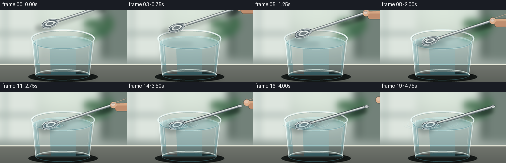
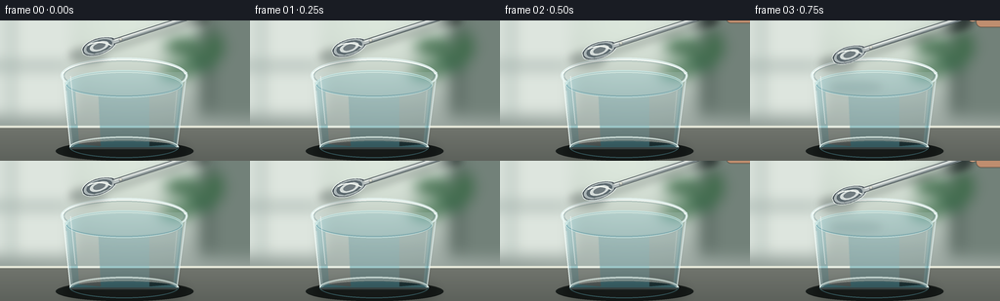

CODING AGENTS AS PIXEL WORLD MODELS
traex/GPT-5.6-Sol · mechanics_0008
点击播放 · 原生 RGB 像素
逐轮保存的候选
回放视频、检查图与代码变化。
每份候选均可单独播放。实际图片检查记录在下方工具轨迹中。
候选 01播放与检查图
点击播放 · 原生 RGB 像素


展开代码变化
--- 上一保存版本
+++ 本次保存版本
@@ -0,0 +1,260 @@
+from pathlib import Path
+import math
+import numpy as np
+from PIL import Image, ImageDraw, ImageFilter
+import artifact_io
+
+W, H, N = 256, 144, 20
+S = 4
+WW, HH = W*S, H*S
+rng = np.random.default_rng(8)
+
+def sc(v):
+ if isinstance(v, (tuple, list)):
+ return tuple(int(round(x*S)) for x in v)
+ return int(round(v*S))
+
+def ease(t):
+ t = max(0.0, min(1.0, t))
+ return t*t*(3-2*t)
+
+def rgba_layer():
+ return Image.new('RGBA', (WW, HH), (0,0,0,0))
+
+def ellipse(draw, box, fill, outline=None, width=1):
+ draw.ellipse(sc(box), fill=fill, outline=outline, width=sc(width) if outline else 1)
+
+def line(draw, pts, fill, width, joint='curve'):
+ draw.line([sc(p) for p in pts], fill=fill, width=sc(width), joint=joint)
+
+def make_background():
+ # warm, softly lit kitchen/background, intentionally defocused
+ y, x = np.mgrid[0:HH, 0:WW]
+ top = np.array([196, 207, 202.], dtype=float)
+ bottom = np.array([145, 157, 151.], dtype=float)
+ q = (y/HH)[...,None]
+ a = top*(1-q) + bottom*q
+ # broad window glow from upper left and gentle vignette
+ glow = np.exp(-(((x-130*S)/(115*S))**2 + ((y-18*S)/(62*S))**2))[...,None]
+ a += glow*np.array([31,31,25.])
+ vign = ((x-WW*.50)/(WW*.73))**2 + ((y-HH*.47)/(HH*.84))**2
+ a -= np.clip(vign[...,None]*17, 0, 24)
+ noise = rng.normal(0, .8, (HH,WW,1))
+ a = np.clip(a+noise,0,255).astype(np.uint8)
+ im = Image.fromarray(a, 'RGB').convert('RGBA')
+ d = ImageDraw.Draw(im, 'RGBA')
+ # broad window/cabinet geometry, later blurred
+ d.rounded_rectangle(sc((-18,-18,73,97)), radius=sc(5), fill=(221,229,222,130))
+ d.rectangle(sc((9,-5,13,101)), fill=(151,169,163,70))
+ d.rectangle(sc((-5,44,70,49)), fill=(145,161,155,52))
+ d.rounded_rectangle(sc((202,-12,270,100)), radius=sc(5), fill=(114,129,121,46))
+ d.rectangle(sc((211,0,216,91)), fill=(76,91,84,25))
+ # distant plant-like green bokeh
+ for cx,cy,rx,ry,col in [(189,27,21,9,(68,111,79,65)),(205,44,16,8,(58,104,73,58)),
+ (181,52,17,7,(76,123,87,53)),(220,27,9,15,(62,106,73,42))]:
+ d.ellipse(sc((cx-rx,cy-ry,cx+rx,cy+ry)), fill=col)
+ im = im.filter(ImageFilter.GaussianBlur(sc(7)))
+ # stone counter
+ d = ImageDraw.Draw(im, 'RGBA')
+ d.rectangle(sc((0,108,256,144)), fill=(112,116,109,255))
+ d.rectangle(sc((0,108,256,110)), fill=(230,232,217,72))
+ # soft counter gradient
+ counter = Image.new('RGBA',(WW,HH),(0,0,0,0)); cd=ImageDraw.Draw(counter,'RGBA')
+ for i in range(sc(35)):
+ alpha = int(80*(i/(35*S)))
+ yy=sc(109)+i
+ cd.line((0,yy,WW,yy), fill=(50,55,51,alpha), width=1)
+ im = Image.alpha_composite(im,counter)
+ return im
+
+BACKGROUND = make_background()
+
+def transform_point(cx, cy, ux, uy, px, py):
+ # local x along spoon axis, local y perpendicular
+ return ((cx + ux*px - uy*py)*S, (cy + uy*px + ux*py)*S)
+
+def draw_spoon(base, cx, cy, angle, alpha=255):
+ ux, uy = math.cos(angle), math.sin(angle)
+ # spoon shadow / contact shadow
+ sh = rgba_layer(); sd=ImageDraw.Draw(sh,'RGBA')
+ shadow_center=(cx+2,cy+5)
+ p1=transform_point(shadow_center[0],shadow_center[1],ux,uy,-18,0)
+ p2=transform_point(shadow_center[0],shadow_center[1],ux,uy,123,0)
+ sd.line((p1,p2),fill=(18,29,31,72),width=sc(6))
+ sd.ellipse((p1[0]-sc(18),p1[1]-sc(8),p1[0]+sc(18),p1[1]+sc(8)),fill=(19,30,31,65))
+ sh=sh.filter(ImageFilter.GaussianBlur(sc(4)))
+ base.alpha_composite(sh)
+
+ layer=rgba_layer(); d=ImageDraw.Draw(layer,'RGBA')
+ # bowl outer shape, slightly egg-shaped (deep rounded end at left, narrow neck at right)
+ top=[]; bottom=[]
+ for xx in np.linspace(-22,14,48):
+ u=(xx+22)/36
+ # rounded oval that pinches gently toward neck
+ yy=9.2*math.sqrt(max(0,1-((xx+4)/18.5)**2)) if -22 <= xx <= 14.5 else 0
+ yy *= (1-.16*u)
+ top.append(transform_point(cx,cy,ux,uy,xx,-yy))
+ bottom.append(transform_point(cx,cy,ux,uy,xx,yy))
+ bowl=top+bottom[::-1]
+ d.polygon(bowl,fill=(73,83,88,alpha))
+ # layered metallic bands follow bowl shape
+ for frac,col in [(0.91,(171,181,183,alpha)),(.75,(91,104,110,alpha)),(.56,(213,220,218,alpha)),(.36,(113,124,128,alpha))]:
+ pts=[]
+ for k in range(54):
+ th=2*math.pi*k/54
+ xx=-4+18.2*frac*math.cos(th)
+ yy=8.8*frac*math.sin(th)*(1-.12*((xx+22)/36))
+ pts.append(transform_point(cx,cy,ux,uy,xx,yy))
+ d.polygon(pts,fill=col)
+ # bowl bright rim and directional highlights
+ d.line(bowl+[bowl[0]],fill=(235,241,239,220),width=sc(.75),joint='curve')
+ hi=[transform_point(cx,cy,ux,uy,x,-5.1+0.025*(x+10)**2) for x in np.linspace(-15,8,22)]
+ d.line(hi,fill=(250,253,248,205),width=sc(1.15))
+ lo=[transform_point(cx,cy,ux,uy,x,5.7) for x in np.linspace(-12,6,18)]
+ d.line(lo,fill=(44,59,65,110),width=sc(.8))
+ # shaft: dark outline, brushed silver body, bright edge
+ neck=transform_point(cx,cy,ux,uy,11,0)
+ end=transform_point(cx,cy,ux,uy,128,0)
+ d.line((neck,end),fill=(57,67,71,alpha),width=sc(5.8))
+ d.line((neck,end),fill=(183,191,191,alpha),width=sc(4.2))
+ a1=transform_point(cx,cy,ux,uy,13,-1.05); a2=transform_point(cx,cy,ux,uy,128,-1.05)
+ d.line((a1,a2),fill=(245,248,243,220),width=sc(.9))
+ b1=transform_point(cx,cy,ux,uy,17,1.3); b2=transform_point(cx,cy,ux,uy,127,1.3)
+ d.line((b1,b2),fill=(87,101,106,190),width=sc(.9))
+ # handle's subtly widened, rounded tip
+ ex,ey=end
+ d.ellipse((ex-sc(4.7),ey-sc(3.2),ex+sc(4.7),ey+sc(3.2)),fill=(79,90,94,alpha))
+ d.ellipse((ex-sc(3.7),ey-sc(2.3),ex+sc(3.7),ey+sc(2.3)),fill=(196,202,200,alpha))
+ d.arc((ex-sc(3.5),ey-sc(2.1),ex+sc(3.5),ey+sc(2.1)),190,345,fill=(249,251,245,220),width=sc(.7))
+ base.alpha_composite(layer)
+ return (end[0]/S,end[1]/S), (ux,uy)
+
+def draw_hand(base, end, uxuy, withdraw):
+ # a restrained pair of fingertips controlling the handle; moves away after release
+ ux,uy=uxuy; nx,ny=-uy,ux
+ ex=end[0] + 26*withdraw
+ ey=end[1] - 15*withdraw
+ hand=rgba_layer(); d=ImageDraw.Draw(hand,'RGBA')
+ # index finger from upper right, resting above handle tip
+ poly=[(ex-1*ux-3*nx,ey-3*ny),(ex+32*ux-4*nx,ey-4*ny),
+ (ex+41*ux+1*nx,ey+1*ny),(ex+30*ux+7*nx,ey+7*ny),(ex+1*ux+5*nx,ey+5*ny)]
+ d.polygon([sc(p) for p in poly],fill=(213,166,132,242))
+ # rounded fingertip
+ ellipse(d,(ex-6,ey-6,ex+7,ey+7),(220,174,140,245))
+ # thumb below
+ tx,ty=ex+7*ux+8*nx,ey+7*uy+8*ny
+ d.rounded_rectangle(sc((tx-5,ty-4,tx+26,ty+7)),radius=sc(5),fill=(192,142,111,235))
+ # nails and soft highlights
+ ellipse(d,(ex-4.3,ey-4.5,ex+3.5,ey+1.8),(237,201,177,150))
+ line(d,[(ex+2,ey-4),(ex+28*ux,ey+28*uy-4)],(244,204,173,65),1.2)
+ hand=hand.filter(ImageFilter.GaussianBlur(sc(.35)))
+ base.alpha_composite(hand)
+
+def render_frame(i):
+ im=BACKGROUND.copy()
+ d=ImageDraw.Draw(im,'RGBA')
+ # grounded cast shadow
+ ellipse(d,(57,124,198,144),(24,29,27,65))
+ shadow=rgba_layer(); sd=ImageDraw.Draw(shadow,'RGBA')
+ ellipse(sd,(68,126,191,142),(25,30,28,90))
+ shadow=shadow.filter(ImageFilter.GaussianBlur(sc(6))); im.alpha_composite(shadow)
+
+ # rear glass wall and rim: transparent, luminous contour
+ glass=rgba_layer(); gd=ImageDraw.Draw(glass,'RGBA')
+ # subtle inner glass body tint
+ gd.polygon([sc((64,53)),sc((72,132)),sc((181,132)),sc((191,53))],fill=(196,223,224,24))
+ # back rim arcs
+ gd.ellipse(sc((62,38,192,75)),outline=(230,244,242,210),width=sc(2.0))
+ gd.ellipse(sc((65,41,189,72)),outline=(105,139,143,95),width=sc(1.0))
+ gd.arc(sc((64,40,190,73)),185,355,fill=(255,255,250,235),width=sc(1.1))
+ # water volume, surface about y65
+ water_poly=[sc((67,64)),sc((72,130)),sc((181,130)),sc((187,64))]
+ gd.polygon(water_poly,fill=(94,169,183,64))
+ # underwater vertical tonal bands
+ gd.polygon([sc((77,69)),sc((81,127)),sc((103,129)),sc((100,68))],fill=(231,248,246,29))
+ gd.polygon([sc((153,68)),sc((153,129)),sc((177,127)),sc((183,65))],fill=(49,122,139,25))
+ # water surface ellipse
+ gd.ellipse(sc((67,51,187,79)),fill=(122,193,205,67),outline=(202,239,239,170),width=sc(1.0))
+ gd.arc(sc((68,53,186,78)),2,178,fill=(54,132,151,130),width=sc(1.0))
+ gd.arc(sc((68,53,186,78)),181,357,fill=(226,249,245,150),width=sc(.8))
+ im.alpha_composite(glass)
+
+ # Contact timing: arrive around frame 10, settle softly thereafter.
+ if i <= 10:
+ p=ease(i/10)
+ offset=-39*(1-p)
+ settle=0
+ else:
+ p=1
+ t=i-10
+ offset=0
+ settle=1.4*(1-math.exp(-t/2.3)) + 1.0*math.exp(-t/2.4)*math.sin(t*1.7)
+ angle=math.radians(-18 + (1.8*ease(max(0,i-10)/6)))
+ cx=105.5 + (1.3*ease(i/10) if i<=10 else 1.3)
+ cy=64.2 + offset + settle
+
+ # pre-contact reflection hovering on the water
+ refl=rgba_layer(); rd=ImageDraw.Draw(refl,'RGBA')
+ proximity=np.clip((cy-30)/34,0,1)
+ if proximity>0:
+ ellipse(rd,(82,63,135,73),(30,72,79,int(25+35*proximity)))
+ refl=refl.filter(ImageFilter.GaussianBlur(sc(4))); im.alpha_composite(refl)
+
+ # ripple rings from gentle contact, behind spoon
+ if i>=10:
+ age=i-10
+ rip=rgba_layer(); rr=ImageDraw.Draw(rip,'RGBA')
+ for lag,strength in [(0,1.0),(2,.75),(4,.5)]:
+ a=age-lag
+ if a>=0:
+ rx=19+a*4.6; ry=4.2+a*.9
+ fade=max(0,1-a/10)*strength
+ box=(cx-rx,65.5-ry,cx+rx,65.5+ry)
+ rr.ellipse(sc(box),outline=(221,249,247,int(145*fade)),width=sc(.75))
+ rr.arc(sc((box[0],box[1]+1,box[2],box[3]+1)),5,170,fill=(45,132,151,int(100*fade)),width=sc(.65))
+ im.alpha_composite(rip)
+
+ end,uv=draw_spoon(im,cx,cy,angle)
+
+ # thin water glaze across lower portion of the bowl after touching
+ if i>=10:
+ glaze=rgba_layer(); zz=ImageDraw.Draw(glaze,'RGBA')
+ alpha=int(28+20*min(1,(i-10)/3))
+ zz.ellipse(sc((cx-21,cy-1,cx+17,cy+10)),fill=(101,190,202,alpha))
+ zz.arc(sc((cx-22,cy-4,cx+20,cy+8)),3,177,fill=(237,255,252,120),width=sc(.8))
+ im.alpha_composite(glaze)
+
+ # hand remains through contact and then deliberately releases and withdraws
+ withdraw=ease(max(0,i-11)/6)
+ if withdraw<.98:
+ draw_hand(im,end,uv,withdraw)
+
+ # foreground glass edges and base highlights, to convey transparency/depth
+ fg=rgba_layer(); fd=ImageDraw.Draw(fg,'RGBA')
+ line(fd,[(64,53),(72,130)],(239,251,248,195),1.45)
+ line(fd,[(191,53),(181,130)],(231,246,245,170),1.35)
+ line(fd,[(68,72),(74,127)],(255,255,250,86),.65)
+ line(fd,[(186,69),(179,127)],(54,110,121,76),.75)
+ fd.arc(sc((71,119,183,141)),0,180,fill=(67,116,124,110),width=sc(1.0))
+ fd.arc(sc((71,119,183,141)),180,360,fill=(229,244,238,190),width=sc(1.65))
+ fd.arc(sc((74,122,180,137)),180,360,fill=(255,255,249,90),width=sc(.7))
+ # tall speculars
+ line(fd,[(72,57),(77,106)],(255,255,252,112),1.0)
+ line(fd,[(181,72),(178,105)],(245,255,252,58),.7)
+ im.alpha_composite(fg)
+
+ # tiny warm reflected glint on metal, changing as it moves
+ gl=rgba_layer(); gld=ImageDraw.Draw(gl,'RGBA')
+ gx=cx+18; gy=cy-6
+ ellipse(gld,(gx-1.5,gy-1.5,gx+1.5,gy+1.5),(255,249,223,135))
+ gl=gl.filter(ImageFilter.GaussianBlur(sc(.6))); im.alpha_composite(gl)
+
+ return np.asarray(im.convert('RGB').resize((W,H),Image.Resampling.LANCZOS),dtype=np.uint8)
+
+def main():
+ frames=np.stack([render_frame(i) for i in range(N)],axis=0)
+ artifact_io.save(frames,Path(__file__).resolve().parent)
+ print('saved',frames.shape,frames.dtype,'range',frames.min(),frames.max())
+
+if __name__=='__main__':
+ main()
可观测工具轨迹
实际执行的命令与返回图片。
命令 1exit 0
/bin/bash -lc "cat prompt.txt && printf '\\n---RULES---\\n' && cat GENERATION_RULES.md && printf '\\n---SPEC---\\n' && cat task_spec.json"
命令 2exit 0
/bin/bash -lc "find . -maxdepth 2 -type f -printf '%p\\n' | sort && printf '\\nTOOLS\\n' && which ffmpeg || true && which python3 || true"
命令 3exit 0
/bin/bash -lc 'cat artifact_io.py'
命令 4exit 0
/bin/bash -lc "cat > generate.py <<'PY'
from pathlib import Path
import math
import numpy as np
from PIL import Image, ImageDraw, ImageFilter
import artifact_io
W, H, N = 256, 144, 20
S = 4
WW, HH = W*S, H*S
rng = np.random.default_rng(8)
def sc(v):
if isinstance(v, (tuple, list)):
return tuple(int(round(x*S)) for x in v)
return int(round(v*S))
def ease(t):
t = max(0.0, min(1.0, t))
return t*t*(3-2*t)
def rgba_layer():
return Image.new('RGBA', (WW, HH), (0,0,0,0))
def ellipse(draw, box, fill, outline=None, width=1):
draw.ellipse(sc(box), fill=fill, outline=outline, width=sc(width) if outline else 1)
def line(draw, pts, fill, width, joint='curve'):
draw.line([sc(p) for p in pts], fill=fill, width=sc(width), joint=joint)
def make_background():
# warm, softly lit kitchen/background, intentionally defocused
y, x = np.mgrid[0:HH, 0:WW]
top = np.array([196, 207, 202.], dtype=float)
bottom = np.array([145, 157, 151.], dtype=float)
q = (y/HH)[...,None]
a = top*(1-q) + bottom*q
# broad window glow from upper left and gentle vignette
glow = np.exp(-(((x-130*S)/(115*S))**2 + ((y-18*S)/(62*S))**2))[...,None]
a += glow*np.array([31,31,25.])
vign = ((x-WW*.50)/(WW*.73))**2 + ((y-HH*.47)/(HH*.84))**2
a -= np.clip(vign[...,None]*17, 0, 24)
noise = rng.normal(0, .8, (HH,WW,1))
a = np.clip(a+noise,0,255).astype(np.uint8)
im = Image.fromarray(a, 'RGB').convert('RGBA')
d = ImageDraw.Draw(im, 'RGBA')
# broad window/cabinet geometry, later blurred
d.rounded_rectangle(sc((-18,-18,73,97)), radius=sc(5), fill=(221,229,222,130))
d.rectangle(sc((9,-5,13,101)), fill=(151,169,163,70))
d.rectangle(sc((-5,44,70,49)), fill=(145,161,155,52))
d.rounded_rectangle(sc((202,-12,270,100)), radius=sc(5), fill=(114,129,121,46))
d.rectangle(sc((211,0,216,91)), fill=(76,91,84,25))
# distant plant-like green bokeh
for cx,cy,rx,ry,col in [(189,27,21,9,(68,111,79,65)),(205,44,16,8,(58,104,73,58)),
(181,52,17,7,(76,123,87,53)),(220,27,9,15,(62,106,73,42))]:
d.ellipse(sc((cx-rx,cy-ry,cx+rx,cy+ry)), fill=col)
im = im.filter(ImageFilter.GaussianBlur(sc(7)))
# stone counter
d = ImageDraw.Draw(im, 'RGBA')
d.rectangle(sc((0,108,256,144)), fill=(112,116,109,255))
d.rectangle(sc((0,108,256,110)), fill=(230,232,217,72))
# soft counter gradient
counter = Image.new('RGBA',(WW,HH),(0,0,0,0)); cd=ImageDraw.Draw(counter,'RGBA')
for i in range(sc(35)):
alpha = int(80*(i/(35*S)))
yy=sc(109)+i
cd.line((0,yy,WW,yy), fill=(50,55,51,alpha), width=1)
im = Image.alpha_composite(im,counter)
return im
BACKGROUND = make_background()
def transform_point(cx, cy, ux, uy, px, py):
# local x along spoon axis, local y perpendicular
return ((cx + ux*px - uy*py)*S, (cy + uy*px + ux*py)*S)
def draw_spoon(base, cx, cy, angle, alpha=255):
ux, uy = math.cos(angle), math.sin(angle)
# spoon shadow / contact shadow
sh = rgba_layer(); sd=ImageDraw.Draw(sh,'RGBA')
shadow_center=(cx+2,cy+5)
p1=transform_point(shadow_center[0],shadow_center[1],ux,uy,-18,0)
p2=transform_point(shadow_center[0],shadow_center[1],ux,uy,123,0)
sd.line((p1,p2),fill=(18,29,31,72),width=sc(6))
sd.ellipse((p1[0]-sc(18),p1[1]-sc(8),p1[0]+sc(18),p1[1]+sc(8)),fill=(19,30,31,65))
sh=sh.filter(ImageFilter.GaussianBlur(sc(4)))
base.alpha_composite(sh)
layer=rgba_layer(); d=ImageDraw.Draw(layer,'RGBA')
# bowl outer shape, slightly egg-shaped (deep rounded end at left, narrow neck at right)
top=[]; bottom=[]
for xx in np.linspace(-22,14,48):
u=(xx+22)/36
# rounded oval that pinches gently toward neck
yy=9.2*math.sqrt(max(0,1-((xx+4)/18.5)**2)) if -22 <= xx <= 14.5 else 0
yy *= (1-.16*u)
top.append(transform_point(cx,cy,ux,uy,xx,-yy))
bottom.append(transform_point(cx,cy,ux,uy,xx,yy))
bowl=top+bottom[::-1]
d.polygon(bowl,fill=(73,83,88,alpha))
# layered metallic bands follow bowl shape
for frac,col in [(0.91,(171,181,183,alpha)),(.75,(91,104,110,alpha)),(.56,(213,220,218,alpha)),(.36,(113,124,128,alpha))]:
pts=[]
for k in range(54):
th=2*math.pi*k/54
xx=-4+18.2*frac*math.cos(th)
yy=8.8*frac*math.sin(th)*(1-.12*((xx+22)/36))
pts.append(transform_point(cx,cy,ux,uy,xx,yy))
d.polygon(pts,fill=col)
# bowl bright rim and directional highlights
d.line(bowl+[bowl[0]],fill=(235,241,239,220),width=sc(.75),joint='curve')
hi=[transform_point(cx,cy,ux,uy,x,-5.1+0.025*(x+10)**2) for x in np.linspace(-15,8,22)]
d.line(hi,fill=(250,253,248,205),width=sc(1.15))
lo=[transform_point(cx,cy,ux,uy,x,5.7) for x in np.linspace(-12,6,18)]
d.line(lo,fill=(44,59,65,110),width=sc(.8))
# shaft: dark outline, brushed silver body, bright edge
neck=transform_point(cx,cy,ux,uy,11,0)
end=transform_point(cx,cy,ux,uy,128,0)
d.line((neck,end),fill=(57,67,71,alpha),width=sc(5.8))
d.line((neck,end),fill=(183,191,191,alpha),width=sc(4.2))
a1=transform_point(cx,cy,ux,uy,13,-1.05); a2=transform_point(cx,cy,ux,uy,128,-1.05)
d.line((a1,a2),fill=(245,248,243,220),width=sc(.9))
b1=transform_point(cx,cy,ux,uy,17,1.3); b2=transform_point(cx,cy,ux,uy,127,1.3)
d.line((b1,b2),fill=(87,101,106,190),width=sc(.9))
# handle's subtly widened, rounded tip
ex,ey=end
d.ellipse((ex-sc(4.7),ey-sc(3.2),ex+sc(4.7),ey+sc(3.2)),fill=(79,90,94,alpha))
d.ellipse((ex-sc(3.7),ey-sc(2.3),ex+sc(3.7),ey+sc(2.3)),fill=(196,202,200,alpha))
d.arc((ex-sc(3.5),ey-sc(2.1),ex+sc(3.5),ey+sc(2.1)),190,345,fill=(249,251,245,220),width=sc(.7))
base.alpha_composite(layer)
return (end[0]/S,end[1]/S), (ux,uy)
def draw_hand(base, end, uxuy, withdraw):
# a restrained pair of fingertips controlling the handle; moves away after release
ux,uy=uxuy; nx,ny=-uy,ux
ex=end[0] + 26*withdraw
ey=end[1] - 15*withdraw
hand=rgba_layer(); d=ImageDraw.Draw(hand,'RGBA')
# index finger from upper right, resting above handle tip
poly=[(ex-1*ux-3*nx,ey-3*ny),(ex+32*ux-4*nx,ey-4*ny),
(ex+41*ux+1*nx,ey+1*ny),(ex+30*ux+7*nx,ey+7*ny),(ex+1*ux+5*nx,ey+5*ny)]
d.polygon([sc(p) for p in poly],fill=(213,166,132,242))
# rounded fingertip
ellipse(d,(ex-6,ey-6,ex+7,ey+7),(220,174,140,245))
# thumb below
tx,ty=ex+7*ux+8*nx,ey+7*uy+8*ny
d.rounded_rectangle(sc((tx-5,ty-4,tx+26,ty+7)),radius=sc(5),fill=(192,142,111,235))
# nails and soft highlights
ellipse(d,(ex-4.3,ey-4.5,ex+3.5,ey+1.8),(237,201,177,150))
line(d,[(ex+2,ey-4),(ex+28*ux,ey+28*uy-4)],(244,204,173,65),1.2)
hand=hand.filter(ImageFilter.GaussianBlur(sc(.35)))
base.alpha_composite(hand)
def render_frame(i):
im=BACKGROUND.copy()
d=ImageDraw.Draw(im,'RGBA')
# grounded cast shadow
ellipse(d,(57,124,198,144),(24,29,27,65))
shadow=rgba_layer(); sd=ImageDraw.Draw(shadow,'RGBA')
ellipse(sd,(68,126,191,142),(25,30,28,90))
shadow=shadow.filter(ImageFilter.GaussianBlur(sc(6))); im.alpha_composite(shadow)
# rear glass wall and rim: transparent, luminous contour
glass=rgba_layer(); gd=ImageDraw.Draw(glass,'RGBA')
# subtle inner glass body tint
gd.polygon([sc((64,53)),sc((72,132)),sc((181,132)),sc((191,53))],fill=(196,223,224,24))
# back rim arcs
gd.ellipse(sc((62,38,192,75)),outline=(230,244,242,210),width=sc(2.0))
gd.ellipse(sc((65,41,189,72)),outline=(105,139,143,95),width=sc(1.0))
gd.arc(sc((64,40,190,73)),185,355,fill=(255,255,250,235),width=sc(1.1))
# water volume, surface about y65
water_poly=[sc((67,64)),sc((72,130)),sc((181,130)),sc((187,64))]
gd.polygon(water_poly,fill=(94,169,183,64))
# underwater vertical tonal bands
gd.polygon([sc((77,69)),sc((81,127)),sc((103,129)),sc((100,68))],fill=(231,248,246,29))
gd.polygon([sc((153,68)),sc((153,129)),sc((177,127)),sc((183,65))],fill=(49,122,139,25))
# water surface ellipse
gd.ellipse(sc((67,51,187,79)),fill=(122,193,205,67),outline=(202,239,239,170),width=sc(1.0))
gd.arc(sc((68,53,186,78)),2,178,fill=(54,132,151,130),width=sc(1.0))
gd.arc(sc((68,53,186,78)),181,357,fill=(226,249,245,150),width=sc(.8))
im.alpha_composite(glass)
# Contact timing: arrive around frame 10, settle softly thereafter.
if i <= 10:
p=ease(i/10)
offset=-39*(1-p)
settle=0
else:
p=1
t=i-10
offset=0
settle=1.4*(1-math.exp(-t/2.3)) + 1.0*math.exp(-t/2.4)*math.sin(t*1.7)
angle=math.radians(-18 + (1.8*ease(max(0,i-10)/6)))
cx=105.5 + (1.3*ease(i/10) if i<=10 else 1.3)
cy=64.2 + offset + settle
# pre-contact reflection hovering on the water
refl=rgba_layer(); rd=ImageDraw.Draw(refl,'RGBA')
proximity=np.clip((cy-30)/34,0,1)
if proximity>0:
ellipse(rd,(82,63,135,73),(30,72,79,int(25+35*proximity)))
refl=refl.filter(ImageFilter.GaussianBlur(sc(4))); im.alpha_composite(refl)
# ripple rings from gentle contact, behind spoon
if i>=10:
age=i-10
rip=rgba_layer(); rr=ImageDraw.Draw(rip,'RGBA')
for lag,strength in [(0,1.0),(2,.75),(4,.5)]:
a=age-lag
if a>=0:
rx=19+a*4.6; ry=4.2+a*.9
fade=max(0,1-a/10)*strength
box=(cx-rx,65.5-ry,cx+rx,65.5+ry)
rr.ellipse(sc(box),outline=(221,249,247,int(145*fade)),width=sc(.75))
rr.arc(sc((box[0],box[1]+1,box[2],box[3]+1)),5,170,fill=(45,132,151,int(100*fade)),width=sc(.65))
im.alpha_composite(rip)
end,uv=draw_spoon(im,cx,cy,angle)
# thin water glaze across lower portion of the bowl after touching
if i>=10:
glaze=rgba_layer(); zz=ImageDraw.Draw(glaze,'RGBA')
alpha=int(28+20*min(1,(i-10)/3))
zz.ellipse(sc((cx-21,cy-1,cx+17,cy+10)),fill=(101,190,202,alpha))
zz.arc(sc((cx-22,cy-4,cx+20,cy+8)),3,177,fill=(237,255,252,120),width=sc(.8))
im.alpha_composite(glaze)
# hand remains through contact and then deliberately releases and withdraws
withdraw=ease(max(0,i-11)/6)
if withdraw<.98:
draw_hand(im,end,uv,withdraw)
# foreground glass edges and base highlights, to convey transparency/depth
fg=rgba_layer(); fd=ImageDraw.Draw(fg,'RGBA')
line(fd,[(64,53),(72,130)],(239,251,248,195),1.45)
line(fd,[(191,53),(181,130)],(231,246,245,170),1.35)
line(fd,[(68,72),(74,127)],(255,255,250,86),.65)
line(fd,[(186,69),(179,127)],(54,110,121,76),.75)
fd.arc(sc((71,119,183,141)),0,180,fill=(67,116,124,110),width=sc(1.0))
fd.arc(sc((71,119,183,141)),180,360,fill=(229,244,238,190),width=sc(1.65))
fd.arc(sc((74,122,180,137)),180,360,fill=(255,255,249,90),width=sc(.7))
# tall speculars
line(fd,[(72,57),(77,106)],(255,255,252,112),1.0)
line(fd,[(181,72),(178,105)],(245,255,252,58),.7)
im.alpha_composite(fg)
# tiny warm reflected glint on metal, changing as it moves
gl=rgba_layer(); gld=ImageDraw.Draw(gl,'RGBA')
gx=cx+18; gy=cy-6
ellipse(gld,(gx-1.5,gy-1.5,gx+1.5,gy+1.5),(255,249,223,135))
gl=gl.filter(ImageFilter.GaussianBlur(sc(.6))); im.alpha_composite(gl)
return np.asarray(im.convert('RGB').resize((W,H),Image.Resampling.LANCZOS),dtype=np.uint8)
def main():
frames=np.stack([render_frame(i) for i in range(N)],axis=0)
artifact_io.save(frames,Path(__file__).resolve().parent)
print('saved',frames.shape,frames.dtype,'range',frames.min(),frames.max())
if __name__=='__main__':
main()
PY
python3 generate.py
ls -lh pixels.npz inspection.png transition_check.png index.html frames/00.png frames/19.png"保存候选 1 份；完成命令 4 次；可验证图片返回 0 张。原始 API 响应与完整日志保留在本地。